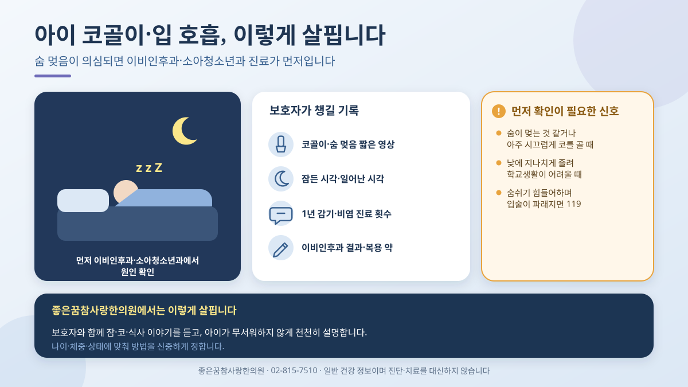

이종호 한의사 감수좋은꿈참사랑한의원 대표원장 (한의사 면허번호 19769)발행 2026-11-24 · 수정 2026-11-25
이 글의 차례
아이의 코골이는 흔하지만, 자다가 숨이 멎는 듯하거나 낮에 짜증과 졸음이 많다면 확인이 필요합니다. 편도나 아데노이드가 크거나 비염으로 코가 막혀 입으로 숨을 쉬는 경우가 많아, 먼저 이비인후과나 소아청소년과에서 원인을 확인하고 한의원에서는 잠과 성장, 생활을 함께 살핍니다.
왜 이런 불편이 생길 수 있나요
- 편도와 아데노이드가 크면 자는 동안 숨길이 좁아져 코를 골 수 있습니다.
- 비염이나 잦은 감기로 코가 막히면 입을 벌리고 숨을 쉬게 됩니다.
- 침실이 건조하거나 먼지가 많으면 코막힘이 심해질 수 있습니다.
- 잠을 깊이 못 자면 낮에 짜증, 졸음, 집중 어려움으로 나타나기도 합니다.
- 감기에 걸린 며칠 동안만 코를 고는 경우도 있어, 감기가 나은 뒤에도 이어지는지가 중요한 기준이 됩니다.
자주 하는 오해
- 아이가 코를 골면 깊이 잘 자는 것이라고 여기기 쉽지만, 매일 코를 골며 입을 벌리고 잔다면 오히려 잠이 얕을 수 있어 살펴볼 만합니다.
- 크면 저절로 나아지니 기다리면 된다고 넘기기 쉽지만, 숨이 멈추는 모습이 보이거나 낮에 졸음과 짜증이 많다면 기다리기보다 먼저 확인하는 편이 좋습니다.
- 입으로 숨 쉬는 것은 습관일 뿐이라고 생각하기 쉽지만, 코가 막혀서 어쩔 수 없이 입으로 쉬는 경우가 많아 코 상태부터 확인합니다.
- 낮에 산만하고 집중을 못 하면 성격 탓으로만 보기 쉽지만, 밤잠이 부족해서 생기는 모습일 수도 있어 잠을 함께 살핍니다.
예를 들면 이런 경우입니다
- 예를 들어 어린이집에 다니며 감기를 달고 사는 아이가 감기가 끝난 뒤에도 몇 주째 입을 벌리고 코를 곤다면, 이비인후과에서 코와 편도 상태를 먼저 확인하고 침실 습도와 잠자리 시각을 함께 정리합니다.
- 예를 들어 초등학생 아이가 아침마다 깨우기 힘들고 수업 중 자주 졸며 밤에 코골이가 심하다면, 자는 모습 영상을 찍어 소아청소년과 진료를 먼저 받고 저녁 일과와 화면 시간을 함께 살핍니다.
- 예를 들어 맞벌이 가정에서 아이가 늦게 잠들고 주말마다 몰아서 자는 경우라면, 코골이와 함께 하루 리듬이 밀려 있지 않은지 보호자와 함께 점검합니다.
먼저 이렇게 여쭙니다
- 매일 코를 골고 입으로 숨을 쉬나요?
- 자다가 숨을 멈추는 것 같거나 가쁘게 쉬나요?
- 낮에 졸리거나 집중이 어렵고 짜증을 내나요?
- 코막힘과 비염, 감기가 잦나요?
- 키와 몸무게는 잘 자라고 있나요?
일상에서 먼저 해 볼 수 있는 것
- 침실 먼지와 습도를 관리하고 침구를 자주 세탁하기
- 자는 모습을 휴대폰으로 짧게 찍어 두기
- 잠자리에 드는 시간을 일정하게 하기
- 코 세척 방법은 의사와 상의하기
한의원에서 함께 살필 수 있는 경우
- 코막힘이 잦아 입으로 숨을 쉬는 경우 코와 호흡, 생활 환경을 함께 살핍니다.
- 잠을 깊이 못 자 아침에 일어나기 힘들어하는 경우 수면 리듬을 함께 살핍니다.
- 입맛이 없고 감기에 자주 걸리는 경우 식사와 생활 리듬을 함께 살핍니다.
좋은꿈참사랑한의원에서는 보호자와 함께 아이의 잠과 코, 식사 이야기를 듣고, 아이가 무서워하지 않도록 천천히 설명하며 진맥·설진 등으로 살핍니다. 나이와 체중, 상태에 맞춰 방법을 신중하게 정하며, 숨 멎음이 의심되면 이비인후과·소아청소년과 진료를 먼저 안내합니다.
첫 방문에는 문진으로 코골이가 시작된 시기와 빈도, 숨 멈춤 여부, 감기·비염 이력, 잠든 시각과 아침 모습, 입맛과 배변을 보호자께 먼저 여쭙고, 아이에게도 직접 불편한 점을 물어봅니다. 이어서 진맥으로 몸 상태를 살피고, 필요하다고 판단되면 인바디로 키와 체중, 체성분의 흐름을 확인합니다.
보호자가 적어 온 수면 기록과 영상을 함께 보며 집에서 먼저 바꿀 점과 치료 방향을 설명해 드리고, 다시 오시면 그사이 잠과 코막힘이 어땠는지부터 이어서 여쭙습니다.
얼마나 지켜보고, 언제 상담하면 좋을까요
- 감기에 걸린 동안만 코를 곤다면 감기가 나은 뒤 1~2주 지켜보세요.
- 감기와 상관없이 한 달 넘게 거의 매일 코를 골고 입으로 숨을 쉰다면 이비인후과나 소아청소년과 진료를 받아 보세요.
- 자다가 숨이 멈추는 듯 조용해졌다가 몰아쉬는 모습이 보이면 기다리지 말고 진료를 예약하세요.
- 숨쉬기 힘들어하며 입술이 파래지면 바로 응급실로 가세요.
스스로 점검해 보세요
- 감기가 아닐 때도 일주일에 3일 넘게 코를 곤다
- 자면서 입을 벌리고 숨을 쉰다
- 자다가 숨이 멈추는 듯 조용하다가 크게 몰아쉰다
- 잘 때 땀을 많이 흘리거나 자세를 자주 바꾼다
- 아침에 깨우기 힘들고 일어나서도 짜증이 많다
- 낮에 졸거나 집중하기 어려워한다
- 감기나 비염으로 병원에 자주 간다
세 번째 항목에 해당하면 소아청소년과나 이비인후과 진료를 먼저 받으시고, 나머지 항목은 진료 때 말씀해 주시면 상담이 쉬워집니다.
이렇게 기록해 오시면 상담이 쉬워집니다
- 코골이와 숨 멎음이 보이는 짧은 영상
- 잠든 시각과 일어난 시각
- 최근 1년 동안 감기·비염으로 진료받은 횟수
- 이비인후과 진료 결과와 복용 약
이런 증상은 먼저 확인이 필요합니다
- 숨이 멎는 것 같거나 매우 시끄럽게 코를 고는 경우
- 낮에 지나치게 졸리고 학교생활이 어려운 경우
- 성장이 더디거나 야뇨, 집중 문제가 함께 있는 경우
- 숨쉬기 힘들어하며 입술이 파래지는 경우
숨쉬기 힘들어하거나 입술이 파래지면 바로 응급실로 가세요. 아이에게 처방된 약은 의사와 상의 없이 줄이거나 끊지 않습니다.
함께 읽으면 좋은 글
- 아이가 감기에 자주 걸리고 코가 막힐 때는 어떤 점을 살펴보나요?
- 아이 방의 습도와 먼지는 코 막힘과 기침에 어떻게 영향을 주나요?
- 아이가 잠투정이 심하고 자다가 자주 깰 때는 어떤 점을 살펴보나요?

여쭙는 것
- 매일 코를 골고 입으로 숨을 쉬나요?
- 자다가 숨을 멈추는 것 같거나 가쁘게 쉬나요?
- 낮에 졸리거나 집중이 어렵고 짜증을 내나요?
생활에서 해 볼 것
- 침실 먼지와 습도를 관리하고 침구를 자주 세탁하기
- 자는 모습을 휴대폰으로 짧게 찍어 두기
- 잠자리에 드는 시간을 일정하게 하기
한의원에서 함께 살필 것
- 코막힘이 잦아 입으로 숨을 쉬는 경우 코와 호흡, 생활 환경을 함께 살핍니다.
- 잠을 깊이 못 자 아침에 일어나기 힘들어하는 경우 수면 리듬을 함께 살핍니다.
- 입맛이 없고 감기에 자주 걸리는 경우 식사와 생활 리듬을 함께 살핍니다.
먼저 확인이 필요한 신호
- 숨이 멎는 것 같거나 매우 시끄럽게 코를 고는 경우
- 낮에 지나치게 졸리고 학교생활이 어려운 경우
- 성장이 더디거나 야뇨, 집중 문제가 함께 있는 경우
한눈에 보는 표
| 구분 | 핵심 |
|---|---|
| 여쭙는 것 | 매일 코를 골고 입으로 숨을 쉬나요? 자다가 숨을 멈추는 것 같거나 가쁘게 쉬나요? |
| 생활에서 해 볼 것 | 침실 먼지와 습도를 관리하고 침구를 자주 세탁하기 자는 모습을 휴대폰으로 짧게 찍어 두기 |
| 한의원에서 함께 살필 것 | 코막힘이 잦아 입으로 숨을 쉬는 경우 코와 호흡, 생활 환경을 함께 살핍니다. 잠을 깊이 못 자 아침에 일어나기 힘들어하는 경우 수면 리듬을 함께 살핍니다. |
| 먼저 확인이 필요한 신호 | 숨이 멎는 것 같거나 매우 시끄럽게 코를 고는 경우 낮에 지나치게 졸리고 학교생활이 어려운 경우 |
자주 묻는 질문
아이 코골이는 한의원에서 어떻게 살피나요?
코막힘과 수면, 성장, 식사와 생활을 함께 묻고 필요하면 병원 진료를 안내합니다.
수술이 필요한가요?
편도와 아데노이드 상태는 이비인후과에서 확인합니다.
아이도 한약을 먹일 수 있나요?
나이와 체중, 몸 상태에 맞춰 신중하게 정하며 복용 중인 약을 모두 알려 주세요.
자는 모습은 어떻게 찍어 오면 좋을까요?
잠든 지 1~2시간 뒤에 얼굴과 가슴이 보이도록 1~2분 정도 찍어 오시면, 숨소리와 숨 멈춤, 가슴이 움직이는 모습을 함께 보기 쉽습니다.
좋은꿈참사랑한의원은 재진 때 지난번 이야기부터 이어서 여쭙니다. 진료시간과 예약은 오시는 길에서 확인하세요.
어디서 상담받을 수 있나요?
좋은꿈참사랑한의원은 서울 동작구 만양로2길 2 신성빌딩 3층·5층(서울 동작구 상도동, 7호선 상도역 3번 출구 근처)에 있습니다. 한의사 3명(이종호 대표원장, 조영기 수석진료원장, 정원영 진료원장)이 진료합니다. 진료시간은 평일 09:30~20:00(점심 13:00~14:00), 토·일·공휴일 09:30~15:00이며, 방문 전 전화로 확인을 권합니다. 예약은 네이버 예약, 카카오톡 상담, 전화 02-815-7510로 받습니다.
이 글은 일반적인 건강 정보이며 개인의 진단이나 치료를 대신하지 않습니다. 증상이 있거나 복용 중인 약이 있다면 진료를 통해 확인하세요. 치료 효과는 개인마다 다를 수 있습니다.
작성 기준: 일반적으로 알려져 있는 건강 정보를 참고해 정리했습니다(대표원장 감수). 증상 기록은 1~2주 동안 하루 1회, 비슷한 시간에 적어 오시면 지난 상태와 비교하기 쉽습니다.